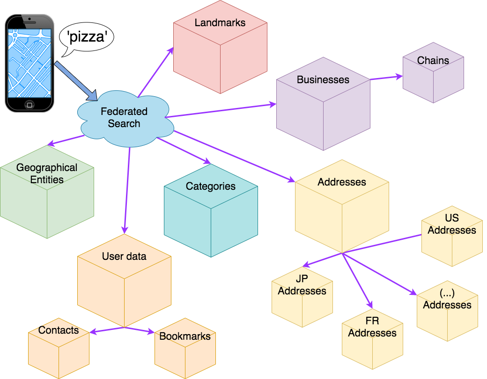
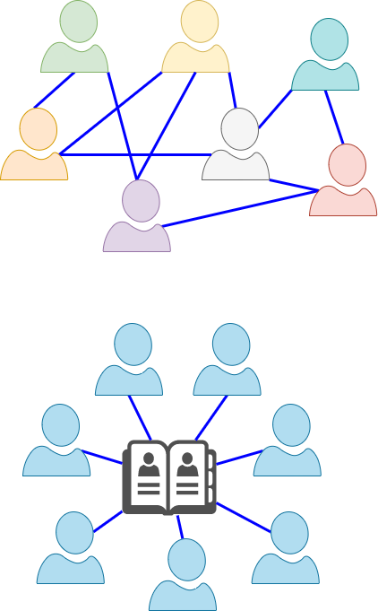

Federated Architectures
The recurring theme of federation in distributed system
Some editorial choices about this deck:
- Entertaining > Precise
- Cool > Useful
- Future > Present
(Presenter notes available in the source of these slides)
IRL Federation
- United Federation of Planets 🖖
- United States 🇺🇸
- Most companies (teams, franchises, branches) 🏭
Federation: organization pattern involving a combination of centralized decision-making and as peripheral autonomy
Hybrid of top-down (hierarchical) and peer-to-peer (decentralized) 
Federation in Computer Systems
The abstract pattern of Federation is everywhere.
Often in disguise, or called with by different (more precise) names
- DNS
- Kernel
- CPU architecture
Federation in Distributed Systems
Concept of federation is broad overlaps with many concepts we encounter everyday: * Gateway, Router, Facade patterns * Orchestration pattern * Microservices & decentralized systems
Federation is abstract and overlaps with these and more.
In the rest of this deck: practical examples of federation in action
Data federation
GraphQL & Apollo
"GraphQL is a query language for APIs and a runtime for fulfilling those queries with your existing data"
Below the API, query federation.
Apollo stores no data, it federates the request to other systems.
Data layout, location, provider can change without affecting users.
Search federation
Maps Search
Different queries require very different handling, separate indices, ranking, spell-correction model, and more.
- "Starbucks"
- Nearby locations of a specific chain
- Or maybe coffee shops
- "1200 Main Street"
- An address (that exists in hundreds of towns!)
- Show the closest?
- "1600 Pennsylvania Ave"
- A nearby address?
- Or a very famous landmark? (the White House)
- "Paris"
- Paris, France?
- Paris, Texas?
- (many other)
Search federation
Maps Search Architecture

A collection of small specialized search engines.
- Category search
- Address search
- Contacts search
- Businesses search
- Landmark search
- Geographical entities search
- ...
And auxiliary services - Spelling suggestions - User metadata and history - Driving time estimation - ...
Federated storage
FileCoin
Planetary scale decentralized file storage system. Utilizes the blockchain to track blocks and reward people for storing them.
Mine (get paid) to offer storage capacity Pay others to store, serve, replicate, ...
Similar: Threefold (P2P compute grid), LivePeer (video encoding grid), and many more
Federated infrastructure
GAIA-X
European Union next generation cloud.
Similar to AWS in that it offers a variety of services, from bare metal machines, all the way up to high level services.
AWS is centralized, GAIA-X is federated through and through. Only offers the basic protocol for providers and consumers to find each-other and negotiate terms.
- Federated resource catalogs: compute, storage, bandwidth, ...
- Federated services catalog: high level functions, services and API, ...
- Federated data catalogs, with varying degree of access, licensing, ...
- Federated identity and trust: to regulate and delegate access to data and resources
GAIA-X Use case example
Medical records
Each citizen has a virtual medical record.
It is stored safely in the cloud.
- The patient can grant access to a new doctor
- The doctor can add to the medical record (and retain access to the newly added data)
- the patient can delegate access to a parent or guardian
- Research institution may have limited access to aggregate data for statistics and research purposes
- Insurance, prospect employer, etc may request partial access
Federated Service Platforms
Uber, AirBnb & co successfully connect demand and supply at scale.
But their primary driver is profit. Above all they need to appease shareholders and investors.
Making users happy is just a secondary goal. A mean to an end. The real goal is: make money.
Re-imagine these platforms without the shareholders (or making users the shareholders). Same service, different goal: optimize for the collective good of all users.
More similar to public utilities than to for-profit companies.
Built on open-source (trust is paramount). Still collect a fee on transactions, but use it to: * Pay for infrastructure costs, insurance * Compensate employees (support, developers, legal, ...) * Reinvest surplus into making the platform better or give fractional dividends to all participants
Examples: Eva, FairBnb, WindingTree
Federated Social Networks
Facebook, Reddit, Twitter, Instagram, etc. Are great for staying in touch with friends, discuss current events, and more.
But satisfying user's need for connection is just a mean to an end.
The goal of these platform is to make money to shareholders. They are not shy of using dirty tricks to get users to: * Reveal private information, which they can harvest and monetize * Get people addicted, enraged, misinformed, anything required to keep them engaged
User's interests (such as privacy) are only considered if ignoring them is damaging to the platform.
A new generation of federated social platform are emerging: Diaspora, Mastodon, Mobilizon, and more.

Federated Communications
Matrix
WhatsApp, Telegram, Discord, iMessage, GMail, ... provide a great service, but at a (hidden) cost. Your data is being mined and sold (end-to-end encryption is a marketing ploy).
Matrix is a federated, decentralized answer to this problem. An open-source protocol for instant messaging (and, communications in general).
Built ground-up to be federated. Small groups of people can operate their own homeserver, sharing the cost.
Through the homeserver, they can connect to the rest of the world (or not).

Further reading: * Beyond distributed and decentralized: what is a federated network? * The Ultimate Guide to Federated Architecture & Decentralized Social Networks * Decentralized Social Ecosystem Review